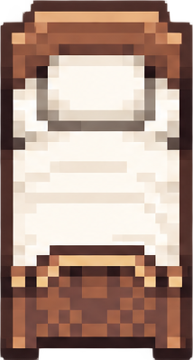
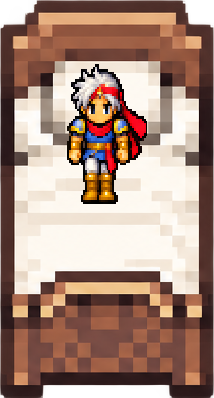
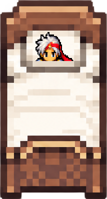
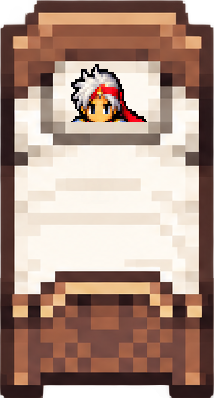
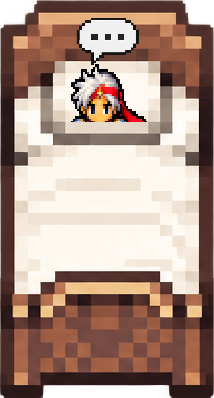

Toggle independent layers to inspect occlusion. The final dialogue layer uses the supplied generated bubble crop. The actor is a standing Firion proxy, not a lying-pose reconstruction.
Layer order: rear backing → actor proxy → sheet crop → foreground footboard → dialogue bubble.




